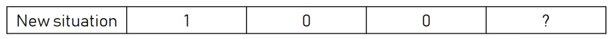
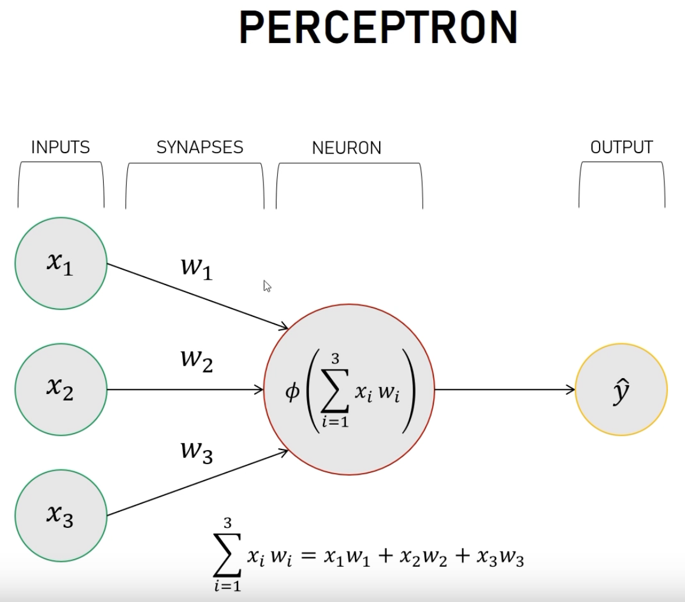

Simple neural network: A perceptron#
Based on https://www.youtube.com/watch?v=kft1AJ9WVDk
This is what we want to train our neural network with:

And we want to predict the new output (try to guess the rule)

This is the neural network that we are going to use (you can also use http://alexlenail.me/NN-SVG/index.html)
from nnv import NNV
layersList = [
{"title":"input", "units": 3, "color": "darkBlue"},
{"title":"hidden 1\n(sigmoid)", "units": 1, "edges_color":"red", "edges_width":2},
{"title":"output\n(sigmoid)", "units": 1,"color": "darkBlue"},
]
NNV(layersList).render()

(<Figure size 640x480 with 1 Axes>, <Axes: >)
To understand better the training, let’s show explicitly the weights 
Here \(\phi\) is called the activation function, and there are several proposals to it. We will use a sigmoid function
where \(x = \sum x_i w_i\).
%matplotlib inline
import matplotlib.pyplot as plt
import seaborn as sns
import numpy as np
sns.set_context('poster')
sns.set_style("whitegrid")
def sigmoid(x) :
return 1.0/(1 + np.exp(-x))
xdata = np.linspace(-6.0, 6.0, 100)
plt.plot(xdata, sigmoid(xdata))
# Highlight x=0 and y=0 axes
plt.axhline(0, color='black', linestyle='--', linewidth=2.5) # Horizontal line at y=0
plt.axvline(0, color='black', linestyle='--', linewidth=2.5) # Vertical line at x=0
# Add labels to the x-axis and y-axis
plt.xlabel("x")
plt.ylabel(rf"sigmoid(x)")
Text(0, 0.5, 'sigmoid(x)')
Basic Implementation#
For this very basic nn, we will:
set the input or start of the algorithm:
Random weights \(w_i\)
Set the training inputs and outputs
Create an iteration function to perform the training for
nsteps(initially 1)
The we just iterate once and check what happens
import numpy as np
def sigmoid(x) :
return 1.0/(1 + np.exp(-x))
def get_training_inputs():
return np.array([[0, 0, 1],
[1, 1, 1],
[1, 0, 1],
[0, 1, 1]])
def get_training_outputs():
return np.array([0, 1, 1, 0]).reshape(4, 1)
def get_init_weights():
"""
Initially, simply return random weights in [-1, 1)
"""
return np.random.uniform(-1.0, 1.0, size=(3, 1))
def training_one_step(training_inputs, training_outputs, initial_weights):
# iter only once
input_layer = training_inputs
outputs = sigmoid(np.dot(input_layer, initial_weights))
return outputs
np.random.seed(1) # what happens if you comment this?
inputs_t = get_training_inputs()
outputs_t = get_training_outputs()
weights = get_init_weights()
print(inputs_t)
print(outputs_t)
print(weights)
[[0 0 1]
[1 1 1]
[1 0 1]
[0 1 1]]
[[0]
[1]
[1]
[0]]
[[-0.16595599]
[ 0.44064899]
[-0.99977125]]
outputs = training_one_step(inputs_t, outputs_t, weights)
print("Training outputs:")
print(outputs_t)
print("Results after one step training:")
print(outputs)
Training outputs:
[[0]
[1]
[1]
[0]]
Results after one step training:
[[0.2689864 ]
[0.3262757 ]
[0.23762817]
[0.36375058]]
Improving the training#
These results are not optimal, and depend a lot on the initial weights. Also, we are not yet comparing with the expecting output for the training data. We are now going to include it and add correction terms to the weights, so we will be using back-propagation. Our algorithm is now:
Take each input from the training data.
Compute the error, i.e. the difference between the output and the expected one,
output - expectedoutput.According to the error, adjust the weights
Repeat this many times, hopefully getting convergence , and also being able to apply our nn to new cases not used already.
But how to adjust the weights? There are several techniques based on the actual error \(\Delta\). Here we will use error weighted derivative. Given the form of the sigmoid function, this increases the adjust if the derivative is larger, and viceversa. It can be expressed as
where \(\phi'\) is the derivative of the activation function. In our one-dimensional case we can compute it easily, but with more complex problems it becomes a gradient and its efficient computation is very important (remember automatic differentiation?) . If you want to learn about backpropagation, I recommend to watch the following excellent tutorials:
https://www.youtube.com/watch?v=SmZmBKc7Lrs
https://www.youtube.com/watch?v=Ilg3gGewQ5U
def sigmoid_prime(x):
return x*(1-x)
def train_nn(training_inputs, training_outputs, initial_weights, niter, errors_data):
"""
training_inputs: asdasdasda
...
errors_data: output - stores the errors per iteration
"""
w = initial_weights
for ii in range(niter):
# Forward propagation
input_layer = training_inputs
outputs = sigmoid(np.dot(input_layer, w))
# Backward propagation
errors = training_outputs - outputs
deltaw = errors*sigmoid_prime(outputs)
deltaw = np.dot(input_layer.T, deltaw)
w += deltaw
# Save errors for plotting later
errors_data[ii] = errors.reshape((4,))
return outputs, w
np.random.seed(1) # what happens if you comment this?
inputs_t = get_training_inputs()
outputs_t = get_training_outputs()
weights = get_init_weights()
NITER = 50000
errors = np.zeros((NITER, 4))
outputs, weights = train_nn(inputs_t, outputs_t, weights, NITER, errors)
print("Training outputs:")
print(outputs_t)
print("Results after training:")
print(outputs)
print(weights)
Training outputs:
[[0]
[1]
[1]
[0]]
Results after training:
[[0.0042779 ]
[0.99650925]
[0.99715469]
[0.00348742]]
[[11.30926129]
[-0.20509237]
[-5.45001623]]
fig, ax = plt.subplots(1, 2, figsize=(20, 5))
ax[0].plot(range(NITER), errors)
ax[0].set_xlabel("Epoch")
ax[0].set_ylabel("Errors")
ax[1].loglog(range(NITER), np.abs(errors))
ax[1].set_xlabel("Epoch")
Text(0.5, 0, 'Epoch')
It seems that our network is very well trained, But how does it perform with a new input? let’s check with [1, 0, 0]
#print(weights)
#print(weights.shape)
input_new = np.array([1, 0, 0]).reshape(3, 1)
#print(input_new)
#print(input_new.shape)
#print(np.sum(weights*input_new))
print(sigmoid(np.sum(weights*input_new)))
0.9999877412862083
Which is basically one, as expected. There are more topics related to this that we have not used, like more layers, more neurons per hidden layer, bias on the activation function, and a lot of other details, but hopefully you now see how a neural network works on the core.
Recommended lectures:
3blue1brown Neural Networks: https://www.youtube.com/watch?v=aircAruvnKk&list=PLZHQObOWTQDNU6R1_67000Dx_ZCJB-3pi
Neural networks from scratch: https://www.youtube.com/watch?v=9RN2Wr8xvro
NN playground: https://playground.tensorflow.org
TODO:
Plot the weights as a funciton of the epoch.
Remove one data from training and check if the prediction is ok. Remove more.
Add a second layer and compare the convergence
Add an example using pythorch/tensorflow